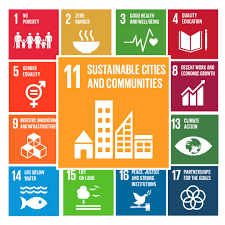
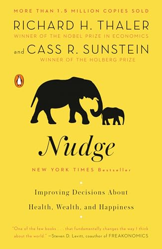
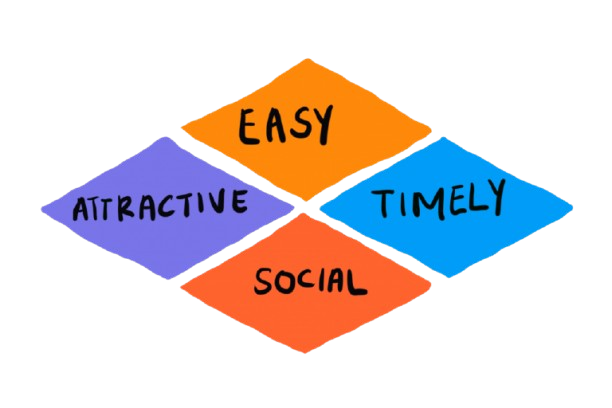

Why the most effective city interventions often have no processor
Let’s remember why we’re building them.
SDGs are wicked problems — no single solution, no stopping rule
Cities house 55% of the world’s population, generate 80% of global GDP, and produce 70% of greenhouse gas emissions. Most SDGs will be won or lost here.
The Anchor
Sustainable Cities and Communities

Sold as a high-tech promise:
The canonical examples:
Built. Expensive.
Often: half-empty.
“Smart” means effective.
Low-tech IS smart city design — when it achieves the SDG outcome.
High-tech smart city projects often underperform
The technology works.
The city doesn’t change.
The missing variable is not the system.
It is the people in it.
The most powerful urban tool has no processor.
It is not primitive. It is human-centred.
Low-tech design is:
Fails gracefully when it fails at all
Who needs a smartphone to use a bench?
Who gets excluded when the Wi-Fi goes down?
Who can maintain it after the consultant leaves?
Solutions can be low-tech. Diagnosis can be hybrid.
What is actually happening here?
How do people move, gather, avoid? What paths do they really take? What spaces do they never use?
What is the minimum effective intervention?
Work with observed behaviour — not assumed behaviour.
Solutions can be low-tech. Diagnosis can be hybrid.
Walking audits
— J. Gehl methodology: go out, count, observe, record
Desire line mapping
— where are paths worn?
Participatory community mapping
— residents as data collectors
Open data
Sentinel satellite (free ESA), OpenStreetMap, Strava Metro cycling flows
Time-lapse cameras
When planners build straight paths and people carve diagonal ones
Who is wrong?
“Desire lines are the city’s unwritten design critique.”
The worn path across the grass is not vandalism. → It is data.
What desire lines reveal
“If you treat drivers like idiots, they act like idiots.”
Hans Monderman, Traffic Engineer (Netherlands)
Speeds dropped. Accidents fell. Pedestrians felt safer.
Uncertainty = attention = care.
“A nudge is any aspect of the choice […] that alters people’s behaviour in a predictable way without forbidding any options or significantly changing their […] incentives.”

William H. Whyte, The Social Life of Small Urban Spaces (1980)
Filmed New York City plazas systematically for years.
Revolutionary findings for their simplicity:
The best public spaces are designed from observation, not assumption.
EAST Framework — Behavioural Insights Team (UK)
These are the levers planners pull — with or without technology.
E — Easy Remove friction from the desired behaviour.
A — Attractive Make the good option visible and appealing.
S — Social Leverage norms: what do others do here?
T — Timely Intervene at the right moment.

Every Sunday, 75 km of streets close to motor traffic.
2 million people walk, cycle, dance, and exercise.
No app. No sensor. No algorithm.
Just: a policy decision + a bollard.
EAST in action
Started in 1976. Still running. Zero technology required.
“The bedrock attribute of a successful city district is that a person must feel personally safe and secure on the street among all these strangers.”
— Jane Jacobs, The Death and Life of Great American Cities (1961)
Safety without cameras — natural surveillance as emergent design property
Cheap. Reversible. Testable.
Activate the street first. Then build.
(San Francisco, 2005) - 1 parking space → micro-park for one day - Originally guerrilla activism; now a global annual event in 1,000+ cities
(Bogotá, NYC Broadway, etc..) - Test a cycle route with paint before committing to concrete - Measure use. Adjust. Then build.
2009 — NYC DOT temporarily closed Broadway to cars. (J.SadiK Khan) Result: foot traffic increased, air quality improved, businesses reported higher sales. 2010: made permanent.
Carlos Moreno — Paris
The idea: every essential service within 15 minutes on foot or bicycle.
Not a technology. Not an app.
A zoning and density policy.
When the destination is reachable, the car becomes optional.
Behaviour changes without mandating it.
62% of Copenhagen residents cycle daily.
This did not happen because of a routing app.
It happened because of 40 years of sustained investment in cycling infrastructure beginning with the 1970s oil crisis.The sequence that matters:
Technology followed the behaviour.
Behaviour followed the design.
Working with natural processes — not engineering around them
Hard infrastructure:
Nature-Based Solutions:
The world’s most celebrated cloudburst management plan.
Diagnose without a six-figure platform
Work with human behaviour
The SDG outcome
Each of these interventions achieved an SDG outcome.
None of them required a server.
| Low-Tech | High-Tech | |
|---|---|---|
| Durability | Decades | 5–10 year cycles |
| Accessibility | Universal | Requires device / data literacy |
| Maintenance | Low | High (and often cut) |
| Failure mode | Graceful | Catastrophic |
| Legibility | Intuitive | Requires training |
| SDG equity | Reaches all residents | May exclude the vulnerable |
The principles of low-tech design are not nostalgic. They are the most durable path to the commitments we made.
SMUA 4500 Smart Cities - Greg Maya © | ↩︎ Back to course